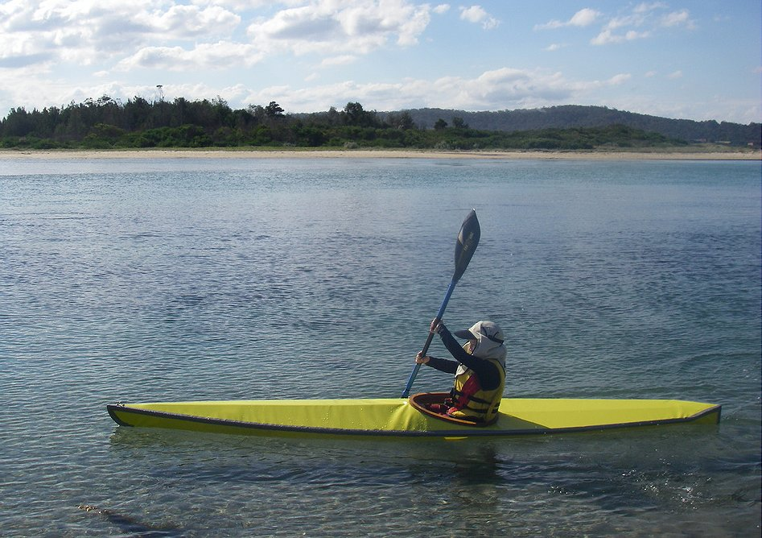

Kidarka by Andrew Parkinson (AU)
Menu
Previous Page
Next Page

8 year old Sam Parkinson paddles his "Kidarka" along the south east coast of Australia. This single chine Baidarka has a wood frame and PVC skin.